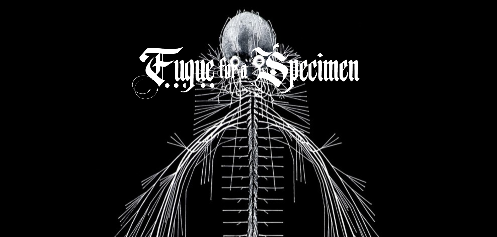
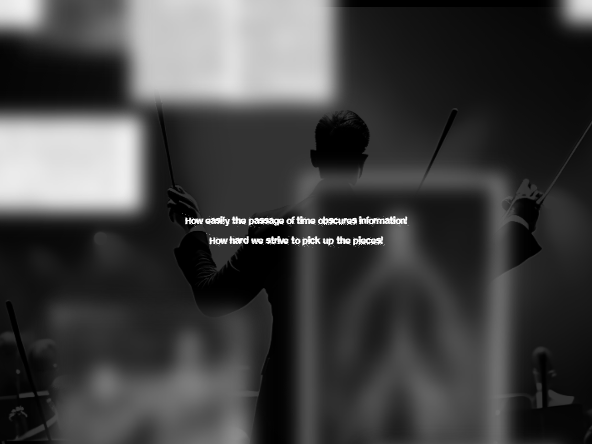

Fugue for a Specimen is a nonfiction nonlinear hypertext about two cases of racialized violence in the American medical system.
The site follows Henrietta Lacks and Harriet Cole, two women whose bodily contributions to modern medicine were erased after death.
Their stories are woven together through the metaphor of a fugue, as defined in both the musical and psychological sense.
The site was coded by hand and hosted on Glitch.com, now defunct. See documentation images below.
An updated version is in progress as of Fall 2026.

